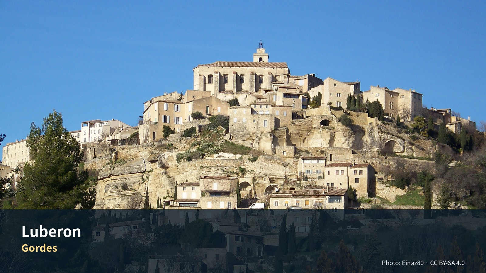

전체 목차
- 08. 뤼베롱 농가체험 4박 5일
- 석조마을, 오커 지형, 시장, 포도밭과 느린 농가생활
- 지역소개
- Editor’s Verdict
- 지역을 이해하는 다섯 개의 층
- 12. 뤼베롱을 이해하는 다섯 가지 열쇠
- 편집자 큐레이션 — 뤼베롱을 ‘마을 목록’이 아니라 하나의 풍경으로 경험하기
- 일정
- 1. 한눈에 보는 실행 요약
- 3. 날짜별 확정 일정 요약
- Day 16 · 9월 13일 일
- Day 17 · 9월 14일 월
- Day 18 · 9월 15일 화
- Day 19 · 9월 16일 수
- Day 20 · 9월 17일 목
- 9. 피로도·활동량·삭제 우선순위
- Pass B. 일자별 실행성 감사
- 여행정보
- 놓치면 아쉬운 선택
- 하루를 완성하는 네 가지 선택
- 이 지역의 Top 10
- 일정에 포함된 장소별 상세 가이드
- 실행지도 · 현장 사용
- 14. 추천등급 요약
- 15. 주요 마을·방문지 상세 소개
- 19. 뤼베롱에서 꼭 체험할 것
- 21. 2026 행사·특별 경험
- 먹거리
- 17. 시장·슈퍼·빵·치즈·제철 식재료
- 18. 음식·레스토랑·카페
- 교통
- 10. 문전 이동과 현실적 소요시간
- 22. 자동차·주차·안전
- 숙박
- 13. 숙소 권역 비교
- 16. 농가 숙소 선정 전략
- 숙소 평가 최종 기준
- 예약
- 11. 예약 우선순위
- 24. 예약카드
- 경비
- 경비 참고처
- 여행팁
- 현장 메모
- 20. Jason 운동·스케치 / Julia 선택 휴식·수영
- 23. 우천·지연·피로 대체안
- 25. 출발 전 최종 확인목록
- 부록
- Phase 10 공식정보 원칙
- 2. 시각요소 자리표시자
- 26. 공식자료·검증 출처

Gordes — Photo: Einaz80, CC BY-SA 4.0; 원문. 가이드북용으로 크롭·리사이즈.
{kind=link}
08. 뤼베롱 농가체험 4박 5일
석조마을, 오커 지형, 시장, 포도밭과 느린 농가생활
여행의 역할: 엑상프로방스의 도시생활과 카시스·마르세유 당일치기를 마친 뒤, 뤼베롱에서는 속도를 낮춘다. 이 구간의 목적은 유명마을을 가능한 많이 수집하는 것이 아니라 농가 숙박 자체, 마을의 재료와 지형, 시장에서 산 식재료, 스케치·산책·테라스 식사를 하나의 생활 경험으로 만드는 것이다.
최신 확정사항: 프로방스는 엑상 4박 + 뤼베롱 농가 4박 + 아비뇽 4박으로 운영하며, 뤼베롱 농가 숙박은 옵션이 아니라 확정 일정이다. 수영장 유무·가열·길이는 숙소 평가에서 완전히 제외하고, 중앙입지·농가환경·전용주방·세탁·주차·포장도로·생활편의·4박 총액을 우선한다.
사용자 선호 반영: 미술관·박물관보다 새로운 도시·마을·지역을 방문하는 경험을 우선한다. 따라서 실내 전시보다 Lourmarin, Roussillon, Goult, Gordes, Ménerbes·Oppède, L’Isle-sur-la-Sorgue의 서로 다른 성격을 비교하도록 설계했다.
디자인 메모: 최종 가이드북에는 지도·사진·그림을 삽입한다. 현재 문서에는 실제 이미지 대신 삽입 위치·제목·설명을 자리표시자로 넣었다.
지역소개
마을을 많이 보는 대신 농가의 시간과 장보기, 석조·오커 풍경을 느리게 경험하는 4박
이번 여행에서 ‘숙박 그 자체가 목적’이 되는 유일한 장
Editor’s Verdict
| 항목 | 평가 |
|---|---|
| 여행 적합도 | ★★★★★ Jason·Julia의 생활형 여행에 최적화 |
| 예산 체감 | 숙박비 높음 |
| 일정 강도 | 느림 |
| 예약 핵심 | 농가 주소·진입·체크인 P0 |
| 우천 전환 | 농가 독서·실내 스케치·가까운 마을 카페 |
지역을 이해하는 다섯 개의 층
역사
로마도로·중세 성채·종교분쟁·농업마을의 흔적이 능선과 계곡에 분산되어 있다.
경제
포도·올리브·과일·라벤더·관광·세컨드하우스 경제가 결합되며, 주거비와 숙박비가 높다.
사회
상주민 생활과 관광·이주민 경제가 공존하고, 시장·자동차·마을별 서비스 접근성이 체류품질을 좌우한다.
문화
마른돌 건축, 오커 채굴, 수도원, 포도밭, 작가·예술가의 이미지가 지역정체성을 만든다.
이번 여행에서의 의미
농가의 시간과 장보기를 중심에 두고 하루 두 마을 이상을 피해야 지역의 느린 성격이 살아난다.
12. 뤼베롱을 이해하는 다섯 가지 열쇠
12.1 하나의 마을이 아니라 산과 평야가 만든 생활권이다
뤼베롱은 단일 도시가 아니다. 남북 산지 사이에 평야·포도밭·과수원·석조마을이 흩어져 있고, 각 마을은 시장일·수원·농지·도로 조건에 따라 다른 역할을 가진다.
북쪽 Monts de Vaucluse
Gordes · Roussillon · Goult
↓ 포도밭·과수원·시장
Ménerbes · Oppède · Robion · Coustellet
↓
남쪽 Petit/Grand Luberon
Bonnieux · Lacoste · Lourmarin
12.2 돌의 색이 마을의 성격을 바꾼다
- Gordes·Goult·Ménerbes: 밝은 석회석과 마른돌
- Roussillon: 철분 많은 오커로 붉고 노란 벽색
- Oppède-le-Vieux: 어두운 폐허와 거친 돌길
- Lourmarin: 남쪽의 밝고 열린 분위기
12.3 시장이 여행의 실제 시간을 결정한다
- 일요일 Coustellet: 숙박 첫날 생산자 장보기
- 화요일 Gordes: 대표 관광시장
- 목요일 L’Isle: 이동일 시장
마을 유명도보다 시장요일과 숙소 냉장고가 일정의 중심이다.
12.4 9월은 라벤더보다 포도·무화과·빛의 계절이다
9월 중순 Sénanque에서 보라색 라벤더밭을 기대해서는 안 된다. 대신 수확 전후의 포도밭, 무화과·포도·토마토, 낮아지는 햇빛과 선선한 저녁이 장점이다.
12.5 자동차를 쓰되 하루 종일 운전하지 않는다
유명마을 간 표면거리는 짧아도 주차·오르막·혼잡이 시간을 만든다. 하루에 서로 다른 성격의 마을 2곳이면 충분하다.
편집자 큐레이션 — 뤼베롱을 ‘마을 목록’이 아니라 하나의 풍경으로 경험하기
핵심 관람법
뤼베롱의 유명마을은 개별적으로 보면 석조골목·전망·상점이 반복될 수 있다. 각 마을에 다른 역할을 부여한다.
| 장소 | 이번 여행에서의 역할 | 관찰 포인트 |
|---|---|---|
| Lourmarin | 평탄한 생활마을·첫 입문 | 광장, 책방, 성과 카페 |
| Roussillon | 색채와 지질 | 오커 절벽, 붉은 벽, 소나무 |
| Goult | 조용한 생활감 | 풍차, 낮은 돌집, 주민생활 |
| Gordes | 상징적 지형 | 계단식 마을 전체 전망 |
| Village des Bories | 돌의 기술 | 모르타르 없는 축조와 공간구성 |
| Ménerbes | 능선형 마을·스케치 | 긴 능선, 포도밭, 전망 |
| L’Isle-sur-la-Sorgue | 물과 시장도시 | 수로, 물레방아, 식재료 |
방문지 소개 보강
Roussillon — 마을보다 먼저 땅의 색을 본다
오커길을 걷고 난 뒤 마을건물의 붉고 노란 벽을 보면, 색이 장식이 아니라 주변 토양에서 나온 것임을 이해하게 된다. 흰옷·밝은 신발은 먼지가 묻을 수 있으며, 강한 햇빛 아래에서는 색이 과장돼 보인다.
- 꼭 해볼 것: 오커층 가까이에서 색 변화 보기, 마을 전망대, 작은 안료상품 구경
- 적정 체류: 2–3시간
Gordes — 전망대에서 이미 절반을 본 셈이다
Gordes의 가장 강한 장면은 마을 안보다 접근도로 전망대에서 보이는 전체 실루엣이다. 시장과 골목은 그 뒤에 이어지는 보조경험이다. 주차가 어렵거나 혼잡하면 전망·시장·짧은 골목만으로도 충분하다.
Village des Bories — ‘옛날집’이 아니라 건조한 땅의 생존기술
돌을 다듬어 쌓는 방식, 저장·농업·가축공간의 기능을 본다. 사진만 찍기보다 한 구조물 안에 들어가 두꺼운 벽과 내부온도를 느껴본다.
Ménerbes — Peter Mayle의 이미지보다 실제 능선마을
유명세보다 조용한 골목, 긴 마을축, 주변 포도밭과 낮은 산지가 강점이다. Jason의 스케치와 Julia의 카페·산책을 같은 시간블록으로 묶기 가장 좋은 곳 중 하나다.
L’Isle-sur-la-Sorgue — 골동품보다 물이 만든 도시구조
시장과 골동품점이 유명하지만, 수로가 건물과 도로 사이를 어떻게 흐르고 물레방아가 산업을 만들었는지 본다. 목요시장은 일요시장보다 규모가 작아 이동일에 오히려 적당하다.
꼭 체험할 것 보강
- 시장–농가 식탁 연결: 장을 본 뒤 24시간 안에 한 끼를 직접 만든다.
- 일몰 전 테라스 45분: 외식보다 농가에서 빛이 변하는 시간을 본다.
- 작은 와이너리 시음: 운전자를 정하고 3–4종만 시음, 구매는 1–2병 이내.
- 돌담·포도밭 스케치: 유명 전망대보다 숙소 주변의 평범한 농로를 소재로 한다.
- pétanque 또는 마을광장 관찰: 게임에 참여하지 않아도 주민의 저녁리듬을 본다.
식당 소개 보강
Goût Bistrot — 뤼베롱의 시장재료를 이해하기 쉬운 코스로
세 코스 구성이 명확해 특별식으로 쓰기 좋다. 채소·육류·소스의 계절성을 보고, 다른 날은 농가식으로 단순하게 운영한다.
JU – Maison de Cuisine — 목적지형 식당이므로 일정 전체를 비운다
프리미엄 코스를 선택한다면 다른 마을을 같은 날 더 넣지 않는다. 점심 후 농가로 돌아가 쉬는 날에만 배치하며, “유명해서”보다 지역 생산자를 현대적으로 해석하는 경험을 원할 때 선택한다.
La Table des Ocres — Roussillon 관람을 끊지 않는 실용적 점심
오커길 뒤 이동거리를 늘리지 않고 앉아 쉴 수 있다는 점이 장점이다. 3코스가 길어지면 Goult 체류를 줄인다.
Maison de la Truffe et du Vin — 식당보다 지역상품을 이해하는 정원형 와인바
트러플이 제철이 아니어도 지역와인·치즈·샤퀴테리를 가볍게 맛볼 수 있다. 운전자는 시음량을 줄이고, 정원과 전망을 이용하는 장소로 본다.
농가 테라스 저녁 — 이 구간의 대표 ‘레스토랑’
바게트, 토마토, chèvre, 올리브, 과일, 간단한 roast chicken만으로 충분하다. 준비와 설거지를 최소화하고 해가 지는 시간을 놓치지 않는 것이 핵심이다.
숙소 선택의 편집자 결론
수영장은 평가에서 제외한다. 숙소는 다음 순서로 판단한다.
- 중앙 입지와 야간 진입의 단순성
- 전용주차와 차량 내 짐 관리
- 실제 전용주방·세탁기
- 테라스·정원·조망과 소음
- 슈퍼·빵집 10–15분 접근
- 청소비·보증금·취소조건을 포함한 총액
현장 선택 규칙
- 마을이 반복돼 피곤하면: Goult·Ménerbes 중 하나를 농가생활로 교체
- 강풍·비: Apt 또는 L’Isle의 시장·상점 중심
- 특별식 한 번: Goût Bistrot 또는 JU 중 하나
- 가장 중요한 경험: 농가에서의 저녁과 느린 아침
- 사진 한 장: Gordes 전체전망보다 숙소 테라스의 실제 생활장면도 남긴다.
일정
1. 한눈에 보는 실행 요약
| 항목 | 확정·권장 내용 |
|---|---|
| 체류 | 2026년 9월 13일 일요일 체크인 → 9월 17일 목요일 체크아웃, 4박 |
| 여행 성격 | 농가생활 1.5일 + 마을일 2일 + 이동일 시장·수로도시 |
| 숙소 최우선권 | Goult–Robion–Oppède–Ménerbes 축. Gordes·Roussillon·Bonnieux·L’Isle 접근과 생활편의의 균형이 가장 좋다. |
| 숙소 필수조건 | 중앙입지, 농가·정원·테라스 환경, 실제 조리가 가능한 주방, 세탁기, 전용주차, 포장도로·야간 진입, 슈퍼·빵집 10–15분, 합리적 4박 총액 |
| 계획 숙박예산 | 2인 4박 €700–1,150를 기본 목표. 조건이 우수한 프리미엄 농가형은 €1,200–1,500까지 비교 |
| 필수 마을·체험 | Lourmarin, Roussillon·오커길, Gordes 시장·마을, 농가생활, Ménerbes 또는 Oppède, L’Isle 목요시장 |
| 선택 | Goult, Bonnieux, Village des Bories, Sénanque 내부, 와인 시음, Fontaine-de-Vaucluse |
| 미술관·박물관 | 기본 일정에서 최소화. 열린 유산·마을·시장 중심, 실내는 우천 대체 |
| 식사 | 아침·점심 농가 조리, 저녁 외식 1–2회, 나머지는 시장 식재료로 테라스 식사 |
| 운동 | Jason 농가 주변 걷기·러닝 1회. Julia는 숙소에 이용 가능한 수영장이 있을 때만 선택적으로 이용하며, 별도 시설을 찾아 이동하지 않음 |
| 스케치 | Jason: 농가 풍경 1회, Goult·Ménerbes·Oppède 중 1회 |
| 피로도 | 1–3/5. 이전 도시구간 회복이 목적이므로 하루 핵심 2–4개 |
| 다음 이동 | 9/17 L’Isle-sur-la-Sorgue 목요시장 → Avignon 체크인 |
일정의 핵심 논리
9/13 Aix → Lourmarin의 여행스케치 행사 → Coustellet 생산자시장 → 농가 체크인
↓
9/14 Roussillon 오커길 → 마을 → Goult 또는 Bonnieux → 농가 저녁
↓
9/15 Gordes 시장·마을 → Village des Bories → Sénanque 선택 → 농가 휴식
↓
9/16 농가생활·산책·스케치 → Ménerbes 또는 Oppède → 와인·마을 저녁 선택
↓
9/17 체크아웃 → L’Isle 목요시장·수로 산책 → Fontaine 선택 → Avignon
3. 날짜별 확정 일정 요약
| 날짜 | 요일 | 테마 | 기본 동선 | 피로도 |
|---|---|---|---|---|
| 9/13 | 일 | 엑상에서 농가로, 스케치와 시장 | Aix → Lourmarin → Coustellet → 농가 | 3/5 |
| 9/14 | 월 | 오커색과 생활마을 | 농가 → Roussillon → Goult/Bonnieux → 농가 | 3/5 |
| 9/15 | 화 | Gordes 시장과 돌의 문화 | 농가 → Gordes → Bories → Sénanque 선택 → 농가 | 3/5 |
| 9/16 | 수 | 농가생활·산책·스케치 | 농가 중심 → Ménerbes 또는 Oppède → 농가 | 1–2/5 |
| 9/17 | 목 | 수로도시와 아비뇽 이동 | 농가 → L’Isle-sur-la-Sorgue → Fontaine 선택 → Avignon | 3/5 |
Day 16 · 9월 13일 일
엑상 → Lourmarin 여행스케치 행사 → Coustellet 생산자시장 → 농가
사진 에셋 브리프 — Lourmarin 성과 플라타너스 아래 마을 풍경
- 설명: 남뤼베롱의 밝은 석재와 카페, 성이 어우러진 첫 마을 풍경.
사진 에셋 브리프 — Salon du Carnet de Voyage의 스케치북 전시
- 설명: 여행스케치, 수채화, 드로잉 노트가 펼쳐진 행사 풍경. Jason의 관심과 직접 연결되는 이미지.
9월 13일에는 Lourmarin의 8e Salon du Carnet de Voyage 마지막 날이 열린다. 공식 일정은 09:00–18:30, 입장료 €6–10 범위다. 일반적인 마을 산책보다 Jason에게 특별한 가치가 있으므로, 이번 이동일의 핵심으로 둔다.
| 시간 | 일정 | 실행 포인트 |
|---|---|---|
| 07:30–08:30 | 엑상 숙소 아침·체크아웃 | 냉장고 비우기, 농가 첫날 간식과 물 준비 |
| 08:40 | Aix 출발 | 차량에 모든 짐이 있으므로 귀중품은 몸에 휴대 |
| 09:35–11:15 | Lourmarin 산책 + 여행스케치 행사 | 행사 60분, 마을·카페 30–40분. 성 내부는 기본 제외 |
| 11:20–12:00 | Lourmarin → Coustellet | D973·D2 계열, 실제 교통 확인 |
| 12:00–13:00 | Coustellet 생산자시장 | 일요일 08:00–13:00. 현지 생산자 식재료로 3–4일분 1차 장보기 |
| 13:00–13:45 | 시장 점심·차량 정리 | 빵·치즈·토마토·과일·샐러드 또는 간단한 현지식 |
| 13:45–15:15 | 체크인 전 완충시간 | 숙소 인근 Goult 짧은 산책 또는 카페. 피곤하면 그늘에서 휴식 |
| 15:30–16:30 | 농가 체크인 | 주방·세탁기·쓰레기·주차·대문·야간 조명·테라스 확인 |
| 16:30–18:00 | 농가 적응 | Julia 휴식·산책, Jason 정원·테라스 답사. 수영장은 이용 가능할 때만 선택 |
| 18:00–19:15 | 첫 세탁·간단한 요리 | 시장 식재료로 샐러드, 치즈, 빵, 달걀 또는 파스타 |
| 19:15–20:30 | 테라스 첫 저녁 | 와인은 운전이 끝난 뒤 소량. 일몰 방향 파악 |
오늘의 피로도: 3/5. 이동·행사·시장·체크인이 겹치지만 보행거리는 길지 않다.
오늘 꼭 해볼 것
- 여행스케치 행사에서 마음에 드는 화가·스케치북 2–3개 기록하기
- Coustellet 시장에서 생산자에게 직접 제철 과일과 치즈를 사기
- 체크인 직후 농가의 주방·세탁기·대문·야간 진입·테라스 사용조건을 확인하기
- 첫날 저녁은 외식보다 테라스 식사로 농가체류의 리듬을 시작하기
선택 대안
- 여행스케치 행사 관심이 낮아지면 Lourmarin 마을 60분으로 축소
- 시장에 늦으면 Coustellet 슈퍼에서 최소 장보기 후 농가로 직행
- 행사 혼잡이 심하면 Lourmarin 대신 Roussillon의
Livre en fête를 선택할 수 있으나, 동선은 덜 효율적
Day 17 · 9월 14일 월
Roussillon의 오커와 Goult의 조용한 생활감
사진 에셋 브리프 — Roussillon의 붉은 오커 절벽과 마을
- 설명: 노랑·주황·붉은색 지층과 주택색이 연결되는 뤼베롱의 대표 색채 이미지.
사진 에셋 브리프 — Goult 풍차와 석조 골목
- 설명: Gordes보다 관광객이 적고 생활감이 남아 있는 Goult의 잔잔한 마을 풍경.
| 시간 | 일정 | 실행 포인트 |
|---|---|---|
| 07:45–09:00 | 농가 아침·느린 준비 | 전날 시장 빵·과일·요거트. 정식 운동 생략 |
| 09:15 | 농가 출발 | Roussillon 주차장 실시간 혼잡 확인 |
| 09:30–10:30 | Sentier des Ocres | 9월 운영 09:30–19:00, 마지막 입장 18:30, 성인 €3.50. 비·폭풍·산불위험 시 폐쇄 가능 |
| 10:30–11:40 | Roussillon 마을 | Place de la Mairie, 전망점, 오커색 골목. 상점은 1–2곳만 |
| 11:45–12:40 | 가벼운 점심 | 시장 준비식 또는 La Table des Ocres·La Cuisine des Huguets 선택 |
| 12:40–14:00 | 농가 귀환·휴식 | 오커먼지 제거, 샤워, 낮잠 |
| 15:30–17:15 | Goult 생활마을 산책 | 중앙광장, 옛 골목, 풍차, 작은 상점. Jason 짧은 스케치 30–45분 |
| 17:15–18:00 | 카페 또는 장보기 보완 | 빵·육류·샐러드·물 보충 |
| 19:00–20:30 | 저녁 선택 | 농가 요리 또는 Bonnieux의 Goût Bistrot·JU 특별식 |
오늘의 피로도: 3/5. 오커길은 짧지만 계단·먼지·햇빛을 고려한다.
Sentier des Ocres를 보는 법
두 코스가 있다면 짧은 코스를 기본으로 한다. 목표는 운동량이 아니라 색의 층, 침식 지형, 마을 벽색과 자연지형의 관계를 보는 것이다.
오늘 꼭 해볼 것
- 오커길에서는 붉은 지층만 보지 말고 노랑·주황·보라빛의 변화 관찰하기
- 밝은 신발·흰 바지는 피하고, 오커먼지가 묻어도 되는 복장 사용
- Roussillon과 Goult를 비교해 “관광마을”과 “생활마을”의 차이를 느끼기
- Goult에서 상점보다 골목·벽·풍차를 천천히 보기
Bonnieux 대체안
Goult보다 전망과 식사를 우선하면 오후를 Bonnieux로 바꾼다.
- 높은 마을에서 북쪽 Mont Ventoux 방향 전망
- 교회 주변 오르막은 체력에 따라 축소
- Goût Bistrot: 2026년 €39 메뉴, 월요일 점심·저녁 운영
- JU – Maison de Cuisine: 점심 €65부터, 특별식 후보
우천 대체
- 오커길 폐쇄: Roussillon 골목 45분 → ôkhra 관련 실내 프로그램 또는 농가 요리·스케치
- 비가 지속되면 Goult 대신 Apt 장보기·카페
Day 18 · 9월 15일 화
Gordes 시장, 석조마을, Bories와 Sénanque
사진 에셋 브리프 — Gordes 전망대에서 본 계단식 석조마을
- 설명: 절벽 위에 층층이 쌓인 밝은 석조주택과 뤼베롱 평야가 보이는 대표 이미지.
사진 에셋 브리프 — Gordes 화요일 시장
- 설명: 성 앞 광장과 골목에 과일·직물·올리브·치즈 노점이 들어선 장면.
사진 에셋 브리프 — Village des Bories의 마른돌 오두막
- 설명: 모르타르 없이 돌을 쌓아 만든 농업·목축용 건축의 질감.
| 시간 | 일정 | 실행 포인트 |
|---|---|---|
| 07:15–08:00 | 농가 아침 | 시장일이므로 일찍 출발 |
| 08:10 | 농가 출발 | 화요일 Gordes 중심 통과를 피하고 외곽주차장 목표 |
| 08:45–10:15 | Gordes 화요일시장 | 공식 운영 08:00–13:00. 먼저 식품·생활노점, 기념품은 마지막 |
| 10:15–11:15 | Gordes 마을·전망 | Place du Château, 골목, 전망대. 내부 전시보다 마을 구조 중심 |
| 11:15–11:40 | 차량 이동 | Village des Bories 방향. 좁은 지방도로 주의 |
| 11:40–12:30 | Village des Bories | 9월 매일 09:00–19:00, 성인 €8, 평균 30–45분 |
| 12:35–13:20 | 피크닉 점심 | 시장에서 산 빵·치즈·토마토·과일 |
| 13:30–15:00 | Abbaye de Sénanque 선택 | 계곡 외관과 정적 체험이 기본. 내부는 HistoPad 자율관람 선택 |
| 15:00–16:00 | 농가 귀환 | 운전·산길 여유 포함 |
| 16:00–18:30 | 농가 휴식 | Julia 산책·독서, Jason 독서·사진정리. 수영장은 부가 선택 |
| 19:30 | 저녁 | 농가식 또는 Gordes권 레스토랑은 귀로 동선상 미리 예약할 때만 |
오늘의 피로도: 3/5. 핵심은 시장·마을·Bories이며, Sénanque 내부는 체력과 관심에 따라 뺀다.
Gordes 주차 실무
- 중심 주차는 07:00–08:30 사이 도착이 유리
- 공식 주차요금 안내: 30분 무료 티켓 필요, 4시간까지 €8, 4–11시간 €10
- 화요일 오전에는 마을 관통 운전을 강하게 피한다
- 주차장 이름보다 외곽 진입 후 도보 5–10분을 우선한다
오늘 꼭 해볼 것
- Gordes는 성 내부보다 마을 전체가 보이는 외부 전망점을 먼저 보기
- 시장에서 과일·치즈·올리브 외에 작은 도자·직물도 살펴보기
- Bories에서는 “예쁜 오두막”보다 농업·목축 생활에 어떤 공간이 필요했는지 생각하기
- Sénanque는 라벤더꽃 기대보다 12세기 수도원과 계곡의 적막을 경험하기
Sénanque 내부관람 판단
- 월–토 자율관람: 09:30–11:00 마지막 입장, 13:00–17:00 마지막 입장
- 성인 €8
- HistoPad가 한국어를 지원하므로 언어장벽은 낮다
- 다만 이번 여행 선호상 외관·계곡 30분만 보고 농가로 돌아가는 안도 충분히 좋다
삭제 우선순위
- Sénanque 내부
- Bories 내부
- Gordes 시장·마을은 유지
Day 19 · 9월 16일 수
농가생활, 산책·스케치, Ménerbes 또는 Oppède
사진 에셋 브리프 — 농가 테라스의 아침식사와 포도밭
- 설명: 빵, 과일, 치즈, 커피가 놓인 테라스와 정원·포도밭이 이어지는 장면.
사진 에셋 브리프 — Ménerbes 능선형 석조마을
- 설명: 긴 능선을 따라 주택과 교회가 이어지고 포도밭을 내려다보는 마을 풍경.
사진 에셋 브리프 — Oppède-le-Vieux의 폐허와 언덕길
- 설명: 덜 정비된 돌길, 폐허, 교회가 만드는 극적인 중세마을의 이미지.
오늘은 이번 4박의 핵심인 농가생활일이다. 다른 날보다 늦게 시작하고, 오후에만 마을 하나를 선택한다.
| 시간 | Jason | Julia | 공통 운영 |
|---|---|---|---|
| 08:00–09:30 | 느린 아침·사진정리 | 느린 아침 | 테라스 아침, 날씨 확인 |
| 09:30–10:30 | 농가 주변 산책·짧은 러닝 | 휴식 또는 함께 산책 | 차량 없이 주변환경 체험 |
| 10:30–12:00 | 세탁·스케치 준비 | 독서·산책 준비 | 생활루틴 회복 |
| 12:00–13:00 | 농가 점심 | 농가 점심 | 시장식재료 활용 |
| 13:30–15:30 | 정원·테라스 스케치 2시간 | 산책·독서·카페 또는 선택 수영 | 같은 농가 안팎에서 분리활동 |
| 15:30–16:15 | 정리·샤워 | 샤워·카페 준비 | 마을 출발 여부 판단 |
| 16:15–18:15 | Ménerbes 또는 Oppède | Ménerbes 또는 Oppède | 한 곳만 선택 |
| 18:15–19:00 | 선택: 와인 시음·카페 | 선택: 와인 시음·카페 | 운전자는 시음하지 않거나 매우 제한 |
| 19:30 이후 | 농가 저녁 | 농가 저녁 | 마지막 농가 저녁 |
오늘의 피로도: 1–2/5. 마을을 생략하고 하루 종일 농가에 머물러도 실패가 아니다.
A안 — Ménerbes: 가장 균형 좋은 선택
성격: 능선 위 생활마을, 포도밭 전망, 식당·카페·와인 접근이 상대적으로 좋다.
꼭 해볼 것 - 아래쪽 주차 후 능선 방향으로 천천히 오르기 - 남북 양쪽 전망을 비교하기 - Maison de la Truffe et du Vin의 정원·와인바 운영을 재확인해 가벼운 시음 또는 구매 - 일몰 전 석조 파사드 스케치
적정 체류: 1.5–2시간
B안 — Oppède-le-Vieux: 더 드라마틱한 대안
성격: 정비가 덜 된 돌길과 폐허, 오르막, 중세 교회가 특징이다.
적합 조건 - 날씨가 선선하고 무릎·발 상태가 좋을 것 - 해 질기 전 충분히 내려올 것 - 비가 왔거나 돌길이 젖었으면 선택하지 않음
꼭 해볼 것 - 아래 주차장에서 옛마을까지 오르는 과정 자체를 경험 - 폐허·교회·계곡 전망을 한 장면으로 보기 - 카페보다는 물과 간식을 미리 준비
2026 특별 선택 — Roussillon 오커 페인팅 워크숍
9월 16일 10:00–12:00, 오커와 안료로 색을 만드는 2시간 워크숍이 공식 일정에 올라와 있다. €25이며 독일어 진행 안내다. Jason의 회화 관심에는 맞지만 언어와 오전시간 때문에 기본안이 아니라 선택안으로 둔다.
와인체험 선택
- Domaine Les Roullets: 5–9월 15:30–19:00 public cellar tasting 안내, 사전전화 권장
- Château La Canorgue: 월–토 09:00–12:00, 14:00–18:00 판매·시음, 성 내부 방문은 불가
- 운전자는 시음하지 않거나 뱉는 방식으로 제한
- 포도수확 시기에는 작업차량과 농기계가 늘 수 있으므로 포도밭 진입 금지
Day 20 · 9월 17일 목
L’Isle-sur-la-Sorgue 목요시장과 아비뇽 이동
사진 에셋 브리프 — L’Isle-sur-la-Sorgue 수로와 물레방아
- 설명: 수로, 녹색 물, 카페 테라스, 오래된 물레가 어우러진 도시 풍경.
사진 에셋 브리프 — 목요시장과 지역 식재료
- 설명: 과일·치즈·올리브오일·직물 노점이 수로도시 중심에 들어선 장면.
| 시간 | 일정 | 실행 포인트 |
|---|---|---|
| 07:30–08:30 | 마지막 농가 아침·체크아웃 | 냉장고 비우기, 쓰레기·세탁·열쇠 반납 확인 |
| 08:40 | 농가 출발 | L’Isle 중심 보행구역과 시장통제 대비 |
| 09:15–11:20 | L’Isle 목요시장 | 연중 목·일 06:00–14:00. 목요일은 일요일보다 규모가 관리 가능 |
| 11:20–12:00 | 수로·물레방아 산책 | Quai Jean Jaurès·Rose Goudard 주변 |
| 12:00–13:00 | 점심 | 시장 구매식 또는 수로변 비스트로 |
| 13:00–14:15 | 선택: Fontaine-de-Vaucluse | 물과 절벽 풍경. 주차와 혼잡이 크면 생략 |
| 14:15–15:15 | Avignon 이동 | 숙소 주차·성벽 진입지침 확인 |
| 15:30 이후 | Avignon 체크인 | 다음 챕터로 연결 |
오늘의 피로도: 3/5. 장보기·보행·이동이 겹치므로 Fontaine는 선택으로 둔다.
오늘 꼭 해볼 것
- 농가에서 마지막으로 테라스 아침을 먹고 숙소 경험을 정리하기
- L’Isle 시장에서 농가구간 마지막 지역 식재료 또는 작은 기념품 구입
- 시장만 보고 떠나지 말고 수로와 물레방아를 30분 걷기
- Avignon 도착을 늦추지 않도록 14:30 이전 출발
주차 주의
L’Isle 중심은 시장과 보행화 정책 때문에 차량 접근이 제한될 수 있다. 중심 진입보다 외곽 공영주차 후 도보를 기본으로 한다.
9. 피로도·활동량·삭제 우선순위
| 날짜 | 예상 보행 | 운전 | 피로도 | 삭제 1순위 | 반드시 유지 |
|---|---|---|---|---|---|
| 9/13 | 4–6km | 1.5–2시간 | 3 | Goult 체크인 전 산책 | Lourmarin·시장·체크인 |
| 9/14 | 5–7km | 1–1.5시간 | 3 | Goult/Bonnieux 오후 | Roussillon·오커길 |
| 9/15 | 5–7km | 1.5–2시간 | 3 | Sénanque 내부 | Gordes 시장·마을 |
| 9/16 | 2–5km | 0–1시간 | 1–2 | 마을 전체 | 농가생활·산책·스케치 |
| 9/17 | 4–6km | 1.5–2시간 | 3 | Fontaine | L’Isle·Avignon 이동 |
운영 원칙: 농가생활일을 관광 실패로 여기지 않는다. 이 4박의 성공 기준은 방문마을 수가 아니라 농가에서 보낸 시간, 시장 식재료, 스케치·산책, 느린 저녁이다.
Pass B. 일자별 실행성 감사
9/13 Lourmarin → Coustellet → 농가 체크인
Aix 체크아웃 후 Lourmarin에서 여행의 속도를 낮추는 전환일이다. 점심을 Lourmarin에서 끝내고 Coustellet에서는 30–40분 장보기만 한다. 체크인 목표는 16:00–17:00이며, 어두워진 뒤 농가 진입을 피한다. Cucuron·Bonnieux·Goult 추가는 금지한다.
9/14 Roussillon + Goult 또는 Bonnieux
09:00 출발, Roussillon 외곽주차 09:30, 오커길과 마을을 합쳐 2.5–3시간, 12:30 점심, 14:30 이후 Goult 또는 Bonnieux 중 한 곳을 90분만 본다. 더위·비·미끄러운 오커길이면 오커 트레일을 삭제하고 마을·카페로 전환한다. 두 번째 마을은 피로도 3 이상이면 생략한다.
9/15 Gordes + Bories + Sénanque 선택
화요일 Gordes 시장은 오전 방문이 전제다. 08:15 출발, 08:45 주차, 09:00–11:00 시장·마을, 11:30 점심, 13:00 Bories, 15:00 농가귀환이 기본이다. Sénanque는 예약·교통·체력이 모두 맞을 때만 외관 또는 짧은 관람으로 추가한다. 시장일에는 중심부 진입 대기와 먼 주차를 전제로 걷기 편한 신발을 준비한다.
9/16 농가생활 + Ménerbes 또는 Oppède
오전은 늦은 아침·세탁·산책·스케치로 비워 둔다. 14:30 출발해 Ménerbes 또는 Oppède-le-Vieux 한 곳만 방문하고 17:30 이전 귀환한다. 비가 오면 장보기·요리·독서일로 전환하며, 이 날의 핵심은 ‘아무것도 추가하지 않는 것’이다.
9/17 L’Isle-sur-la-Sorgue → Avignon
09:00 체크아웃, 09:30–12:00 목요시장·수로산책, 12:00–13:00 점심, 14:00 Avignon 도착·주차·체크인을 권장한다. 시장은 오전 중심이므로 출발을 늦추지 않는다. 차량 안에 보이는 짐을 남기지 않고, 숙소 주차가 준비되지 않았으면 관리형 주차장으로 직행한다. Fontaine-de-Vaucluse는 이 날 기본안에서 제외하고 날씨·피로가 매우 좋을 때만 대체한다.
여행정보
주요 방문지
사진은 온라인 상태에서 Wikipedia로부터 불러옵니다.
농산물 직판장이 서는 교차 마을
오커 채석장의 붉은 절벽 마을
조용한 언덕 위 와인 마을
절벽에 쌓아 올린 뤼베롱의 대표 석조마을
돌로만 쌓은 옛 농경 오두막 마을
『프로방스에서의 1년』의 무대
물레방아와 골동품 시장의 수상 마을
놓치면 아쉬운 선택
| 등급 | 장소·경험 | 이 가이드북에서 추천하는 이유 |
|---|---|---|
| 필수 | 농가의 아침과 저녁 | 관광지 사이의 빈 시간이 아니라 Luberon 체류의 본체다. |
| 우선 추천 | Roussillon–Goult | 강한 오커색과 조용한 생활마을을 대비한다. |
| 우선 추천 | Gordes–Bories | 전망도시와 돌의 생활문화를 한 흐름으로 본다. |
| 선택 | Sénanque | 내부관람보다 일정·혼잡·계절 상태에 따라 외관 또는 생략을 결정한다. |
| 선택 | Ménerbes 또는 Oppède | 마지막 날 농가생활을 해치지 않는 범위에서 한 마을만 고른다. |
하루를 완성하는 네 가지 선택
| 시간·역할 | 추천 | 이용법 |
|---|---|---|
| 아침 | 농가 테라스 | 햇빛·소리·식재료를 기록하는 가장 중요한 시간이다. |
| 점심 | 시장 장보기 후 숙소식 | 숙소의 주방과 지역 식재료를 여행경험으로 바꾼다. |
| 저녁 | 농가 또는 가까운 마을 | 야간 좁은길 운전을 최소화한다. |
| 스케치 | 농가 주변·Gordes 전망·Roussillon 색면 | 완성작보다 색과 구조를 기록한다. |
이 지역의 Top 10
- Lourmarin
- Coustellet 시장
- 농가 체크인
- Roussillon
- Goult
- Gordes 시장
- Village des Bories
- Sénanque 선택
- Ménerbes/Oppède
- 농가 마지막 저녁
일정에 포함된 장소별 상세 가이드
1. Roussillon·Sentier des Ocres
왜 중요한가
오커 채굴과 침식지형이 붉은 마을경관을 만든 장소다.
| 항목 | 실행정보 |
|---|---|
| 방문 방법 | 외곽주차 후 마을·오커길 도보. |
| 권장 관람법 | 긴 코스보다 색층·식생·건축재료의 연결을 본다. |
| 권장 체류 | 90–150분 |
| 요금·예약 | 마을 무료, 오커길 유료 가능. |
| 주의사항 | 비 뒤 미끄럼·한낮 더위·흰옷 오염. |
| 공식정보 | https://roussillon-en-provence.fr/ |
2. Goult
왜 중요한가
관광밀도가 낮고 풍차·생활가로가 남은 Luberon의 균형 잡힌 생활마을이다.
| 항목 | 실행정보 |
|---|---|
| 방문 방법 | 마을 공영주차. |
| 권장 관람법 | 전망보다 빵집·광장·주거골목을 본다. |
| 권장 체류 | 60–90분 |
| 요금·예약 | 무료. |
| 주의사항 | 월요일 식당 운영 확인. |
| 공식정보 | https://www.destinationluberon.com/ |
3. Gordes
왜 중요한가
Vaucluse 평야를 내려다보는 절벽마을로 Luberon의 상징적 경관을 만든다.
| 항목 | 실행정보 |
|---|---|
| 방문 방법 | 전망점 또는 외곽주차 후 도보. |
| 권장 관람법 | 도로 전망점에서 전체 형태를 먼저 보고 마을로 들어간다. |
| 권장 체류 | 90–150분 |
| 요금·예약 | 마을 무료, 주차 유료. 30분 무료티켓·4시간 €8 수준 안내 재확인. |
| 주의사항 | 화요일 시장 혼잡. |
| 공식정보 | https://www.gordes-village.com/ |
4. Village des Bories
왜 중요한가
접착재 없이 돌을 쌓은 농업용 구조물 집단으로 전근대 농촌생활을 보여준다.
| 항목 | 실행정보 |
|---|---|
| 방문 방법 | Gordes에서 차량, 전용주차. |
| 권장 관람법 | 개별 오두막보다 기능·배치·돌쌓기 기술을 본다. |
| 권장 체류 | 60–75분 |
| 요금·예약 | 유료. 공식 최신요금 확인. |
| 주의사항 | 그늘 적음, 울퉁불퉁한 길. |
| 공식정보 | https://www.gordes-village.com/ |
5. Abbaye de Sénanque
왜 중요한가
12세기 시토회 수도원으로 계곡지형·절제된 건축·공동체생활이 핵심이다.
| 항목 | 실행정보 |
|---|---|
| 방문 방법 | Gordes에서 차량, 주차규정 확인. |
| 권장 관람법 | 라벤더사진보다 회랑·빛·계곡의 고립성을 본다. |
| 권장 체류 | 45–90분 |
| 요금·예약 | 외관 무료, 내부 유료·예약 가능. |
| 주의사항 | 예배·수도생활 존중, 복장·침묵. |
| 공식정보 | https://www.senanque.fr/ |
6. Ménerbes
왜 중요한가
포도밭 위 능선에 길게 형성된 마을로 방어·농업·문학이미지가 겹친다.
| 항목 | 실행정보 |
|---|---|
| 방문 방법 | 외곽주차 후 능선 산책. |
| 권장 관람법 | 한쪽 끝에서 다른 끝까지 완주하지 않고 전망·광장·wine bar를 묶는다. |
| 권장 체류 | 60–90분 |
| 요금·예약 | 마을 무료. |
| 주의사항 | 마지막 농가생활일에는 선택. |
| 공식정보 | https://www.destinationluberon.com/ |
실행지도 · 현장 사용
- 대화형 HTML 지도
- GeoJSON
- KML
- 대상 일정: Day 16–20
- 숙소 핀은 현재 후보 위치이며 실제 예약주소가 아니다.
- 연결선은 일정상의 기준점 순서를 보여주는 개략선이다. 실제 도보·운전은 Google Maps에서 다시 계산한다.
- HTML 배경지도와 Google Maps 링크는 인터넷 연결이 필요하다.
14. 추천등급 요약
| 장소·경험 | 등급 | 이유 |
|---|---|---|
| 농가생활·테라스 식사 | 필수 | 이 구간 자체의 목적 |
| Coustellet 생산자시장 | 필수 | 체크인 당일 식재료와 생활리듬 확보 |
| Roussillon·오커길 | 필수 | 다른 마을과 완전히 다른 지질·색채 경험 |
| Gordes 시장·마을 | 필수 | 뤼베롱 상징성과 화요일 일정 결합 |
| Lourmarin | 우선 추천 | 이동일에 맞고 스케치 행사와 결합 |
| Goult | 우선 추천 | 관광객이 덜한 생활마을·스케치 |
| Ménerbes | 우선 추천 | 포도밭·능선·와인·저녁 선택 |
| L’Isle 목요시장 | 우선 추천 | 아비뇽 이동과 자연스럽고 도시 성격이 다름 |
| Village des Bories | 선택 | 열린 농업유산, 30–45분이면 충분 |
| Sénanque 내부 | 선택 | 건축·정적은 좋으나 농가·마을보다 후순위 |
| Oppède-le-Vieux | 선택 | 독특하지만 오르막과 돌길 |
| Bonnieux | 선택 | 전망·식당 우수, Goult와 교환 |
| Lacoste | 선택 | 성·예술마을, 일정이 과밀해지기 쉬움 |
| Fontaine-de-Vaucluse | 대체 | 이동일 자연경관, 수량·혼잡 변수 |
| 모든 유명마을 순회 | 비추천 | 주차·중복·피로가 농가체험을 약화 |
| Apt 대형시장 | 이번 체류 불가 | 토요일 시장으로 날짜 불일치 |
15. 주요 마을·방문지 상세 소개
15.1 Lourmarin — 남뤼베롱의 열린 마을
사진 에셋 브리프 — Lourmarin 카페광장과 밝은 석조주택
- 설명: 북쪽 언덕마을보다 평평하고 개방적인 마을 분위기를 보여주는 이미지.
왜 추천하는가 - Aix에서 농가로 이동하는 길에 자연스럽다. - 카페·서점·작은 상점과 성이 적당히 섞여 있다. - 9월 13일 여행스케치 행사가 Jason의 관심과 정확히 맞는다.
꼭 해볼 것 - 메인거리보다 골목·광장에 앉아 20분 관찰 - 여행스케치 행사에서 아이디어 수집 - 성 내부보다 성과 마을의 관계를 외부에서 보기
적정 체류: 1.5–2시간
15.2 Roussillon — 마을 전체가 오커색인 곳
사진 에셋 브리프 — 붉은 벽과 파란 셔터가 대비되는 Roussillon 골목
- 설명: 지질과 건축색이 직접 연결되는 대표 장면.
왜 추천하는가 - 석회석 마을들 사이에서 색이 완전히 다르다. - 오커길과 마을을 같이 봐야 자연지형과 건축의 연결이 보인다.
꼭 해볼 것 - 오커길 짧은 코스 - 전망대에서 오커 절벽과 녹색 숲 비교 - 골목의 벽색·셔터색 조합 사진 또는 색상 메모
적정 체류: 2–2.5시간
15.3 Goult — 과소평가된 생활마을
사진 에셋 브리프 — Goult 풍차와 완만한 골목
- 설명: 유명마을보다 조용하면서도 석조마을의 질감이 잘 남은 풍경.
왜 추천하는가 - Gordes보다 덜 혼잡하고 실제 생활감이 있다. - 빵집·식료품·카페를 농가생활과 연결하기 좋다. - Jason의 짧은 스케치에 안정적이다.
꼭 해볼 것 - 풍차까지 완만하게 올라가기 - 중앙광장에서 커피 30분 - 빵집·정육·치즈점 등 숙소생활에 필요한 곳 파악
적정 체류: 1–1.5시간
15.4 Gordes — 풍경으로 먼저 보는 상징마을
사진 에셋 브리프 — 도로 전망점에서 본 Gordes 전경
- 설명: 절벽 사면에 쌓인 집들이 가장 극적으로 보이는 외부 전경.
왜 추천하는가 - 뤼베롱의 대표 이미지를 직접 확인할 수 있다. - 화요일 시장과 결합하면 관광·생활이 동시에 보인다.
꼭 해볼 것 - 마을 진입 전 외부 전망점 - 화요일 시장에서 식품과 직물 구역 모두 보기 - 골목 깊이보다 광장·성·전망을 1시간 안에 집중
적정 체류: 시장 포함 2–2.5시간
15.5 Village des Bories — 마른돌 건축의 농업마을
사진 에셋 브리프 — 돌을 겹겹이 쌓은 원추형 borie 내부와 외부
- 설명: 지역의 돌과 농업생활이 만든 기능적 건축.
왜 추천하는가 - 실내 박물관보다 지역 생활기술을 직접 보는 열린 공간이다. - 30–45분으로 짧게 볼 수 있다.
꼭 해볼 것 - 돌 사이에 모르타르가 없는 구조 관찰 - 주거·저장·가축 공간의 차이 보기 - 한낮 그늘이 적으므로 모자 착용
15.6 Sénanque — 라벤더보다 수도원과 계곡
사진 에셋 브리프 — 라벤더 수확 후의 Sénanque 수도원과 계곡
- 설명: 보라색 만개 이미지가 아니라 9월의 석조 수도원과 수확 뒤 들판의 실제 분위기.
왜 추천하는가 - 좁은 계곡과 수도원의 위치 자체가 강한 공간경험을 준다. - 한국어 HistoPad로 내부 이해가 가능하다.
꼭 해볼 것 - 수도원 전경을 멀리서 먼저 보기 - 내부보다 침묵과 계곡의 지형에 집중 - 상점에서 수도원 제품을 소량 보기
적정 체류: 외관 30분, 내부 포함 1.5시간
15.7 Ménerbes — 포도밭 위의 능선마을
사진 에셋 브리프 — Ménerbes 능선과 포도밭
- 설명: 마을이 배처럼 긴 능선을 따라 놓인 지형적 특징을 보여주는 장면.
왜 추천하는가 - 유명하지만 Gordes보다 조용하며 포도·와인 경험과 결합하기 좋다. - 농가생활일 오후에 부담 없이 넣을 수 있다.
꼭 해볼 것 - 남북 전망 비교 - 와인·트러플 공간의 정원 또는 bar à vins 확인 - 1시간 이상 서두르지 않고 마을 능선을 걷기
15.8 Oppède-le-Vieux — 폐허와 오르막이 주는 긴장감
사진 에셋 브리프 — Oppède-le-Vieux 폐허와 교회로 오르는 돌길
- 설명: 정돈된 유명마을과 다른 거칠고 극적인 분위기.
왜 추천하는가 - 이번 전체 여행에서 드문 “반쯤 폐허인 중세마을” 경험이다. - Jason의 질감 스케치 소재가 좋다.
주의 - 젖은 돌길·오르막·해질 무렵은 위험 - 편한 신발과 물 필요
15.9 L’Isle-sur-la-Sorgue — 돌마을과 전혀 다른 수로도시
사진 에셋 브리프 — 수로 위 카페와 오래된 물레
- 설명: 뤼베롱 석조마을과 대비되는 물의 도시 이미지.
왜 추천하는가 - 목요시장과 Avignon 이동을 연결한다. - 물·골동품·카페·시장이라는 새로운 도시 성격이 있다.
꼭 해볼 것 - 시장 60–90분 - 수로 산책 30분 - 골동품은 일요일이 더 크므로 목요일에는 생활시장 중심으로 보기
19. 뤼베롱에서 꼭 체험할 것
19.1 시장에서 산 재료로 한 끼 완성
가장 중요한 체험이다. 고급 레스토랑보다 시장에서 산 치즈·토마토·빵·과일을 농가 테라스에서 먹는 경험이 이 구간의 정체성에 더 가깝다.
19.2 pétanque 한 게임
숙소에 코트가 있으면 규칙을 완벽히 알지 못해도 30분 즐긴다. 현지 생활의 리듬을 체험하는 간단한 방식이다.
19.3 포도밭·올리브밭 가장자리 산책
- 사유지 경계를 지킨다
- 수확 작업차량을 방해하지 않는다
- 일몰 전 30–45분이 좋다
19.4 오커색을 실제 그림재료로 이해
Roussillon에서는 단순히 “붉은 절벽”을 보는 데서 끝내지 않고, 색상표를 메모하거나 작은 수채색 테스트를 한다.
19.5 서로 다른 휴식활동을 동시에 배치
Jason이 테라스·정원·풍경을 2시간 그리는 동안 Julia는 산책·독서·카페 또는 숙소에 있는 수영장을 선택한다. 수영을 위해 숙소나 일정 동선을 바꾸지 않는다.
19.6 와인 시음은 ‘한 명만’ 또는 무알코올 방식
한 사람이 지정 운전자가 되고 시음하지 않는다. 시음이 핵심이 아니라 포도밭·와이너리 환경과 생산자의 설명이 핵심이다.
21. 2026 행사·특별 경험
| 날짜 | 행사 | 판단 |
|---|---|---|
| 9/12–13 | Salon du Carnet de Voyage, Lourmarin | 최우선 추천. Jason의 여행스케치 관심과 직접 일치 |
| 9/13 | Livre en fête, Roussillon | 무료 문학행사. Lourmarin 대신 선택 가능 |
| 9/16 | VOM OCKER ZUR FARBE, Roussillon 10:00–12:00 | 오커 페인팅 워크숍, €25, 독일어 진행. 선택 |
| 체류기간 | 포도수확 계절 | 공개행사가 아니며 작업일정·접근은 농가·와이너리에 문의 |
행사 운영 원칙
- 여행스케치 행사는 고정가치가 높아 Day 1에 반영
- 페인팅 워크숍은 농가생활일을 잠식하므로 Jason이 특히 원할 때만 선택
- 포도수확은 구경거리가 아니라 노동현장이므로 허가 없이 접근하지 않음
먹거리
17. 시장·슈퍼·빵·치즈·제철 식재료
17.1 시장 실행표
| 시장 | 운영 | 이번 일정 역할 |
|---|---|---|
| Coustellet 생산자시장 | 일요일 08:00–13:00, 4월–12월 말 | 9/13 체크인 전 핵심 장보기 |
| Gordes 시장 | 화요일 08:00–13:00 | 9/15 관광+장보기 |
| L’Isle 시장 | 목·일 06:00–14:00, 연중 | 9/17 이동일 시장 |
| Bonnieux·Lourmarin | 금요일 오전 | 체류요일과 불일치 |
| Apt 대형시장 | 토요일 오전 | 체류 전날이라 제외 |
17.2 첫날 장보기 목록
| 품목 | 수량·용도 | 메모 |
|---|---|---|
| 바게트·fougasse | 1–2일분 | 다음 날은 빵집에서 새로 구매 |
| chèvre·tomme | 2종 소량 | 냉장공간 확인 |
| jambon cru·saucisson | 샌드위치·aperitif | 염도 고려 |
| 토마토·샐러드채소 | 아침·점심 | 세척·보관 |
| 무화과·포도·자두 | 2일분 | 9월 대표 과일 |
| 달걀·요거트 | 아침 | 시장 없으면 슈퍼 보완 |
| 올리브·tapenade | 빵·저녁 | 소량 |
| 꿀·허브 | 선물·요리 | 유리병 무게 고려 |
| 파스타·쌀·소스 | 피로한 날 저녁 | 슈퍼에서 구매 |
| 물·탄산수 | 차량·숙소 | 농가 수돗물 안내 확인 |
17.3 슈퍼·생활거점
실제 숙소가 확정되면 가장 가까운 다음 생활거점 중 하나를 사용한다.
- Coustellet·Maubec: 중앙 생활권, 중형 슈퍼와 식당
- Robion: 숙소·와이너리권에서 접근이 좋음
- Apt: 선택 폭이 가장 크지만 동쪽 숙소가 아니면 멂
- L’Isle-sur-la-Sorgue: 서쪽 숙소·Avignon 이동과 결합
- Goult·Ménerbes: 빵집·작은 식료품은 좋지만 대량 장보기 제한
18. 음식·레스토랑·카페
사진 에셋 브리프 — 뤼베롱 시장식재료로 만든 농가 테라스 점심
- 설명: 바게트, chèvre, 토마토, 올리브, 무화과와 로제 한 잔이 놓인 단순한 점심.
18.1 식사 운영 원칙
- 4박 중 농가 저녁 2–3회, 외식 1–2회
- 운전이 필요한 저녁은 술을 최소화
- 특별식은 한 번만 선택하고 나머지는 시장·숙소 중심
- 유명마을 중심광장의 즉흥식당보다, 운영일과 예약이 확인되는 식당을 선택
18.2 실제 식당 후보
| 식당 | 위치·성격 | 추천 주문·경험 | 가격대 | 예약 |
|---|---|---|---|---|
| Goût Bistrot | Bonnieux, 계절 bistro | 3코스 시장메뉴, 지역채소·육류·소스 | 2026 €39 메뉴 | 권장 |
| JU – Maison de Cuisine | Bonnieux, Michelin급 | 3 act 점심부터, 지역 생산자 중심 | €65 점심, 상위코스 €95–145 | 필수 |
| La Table des Ocres | Roussillon, hotel-restaurant | 오커마을 관람 뒤 3코스 점심 | €36 set | 권장 |
| La Cuisine des Huguets | Roussillon, casual Provençal | 오늘의 메뉴, 샐러드·전통식 | 중간 | 보통 |
| La Gaudina | Goult 인근, bistronomic | 프로방스·지중해, 그늘 테라스 | 메뉴 변동 | 시간 재확인 |
| Restaurant Pistou | Gordes, 현대적 지역식 | 시장일 점심·가벼운 저녁 | 중간 | 권장 |
| Bistrot des Bories | Gordes, premium Mediterranean | 계절 생선·채소·고기 | 중상 | 권장 |
| Maison de la Truffe et du Vin | Ménerbes, wine bar·garden | 지역 와인, 치즈·charcuterie, 정원 전망 | 중간 | 운영시간 확인 |
| Le p’tit coin des gourmands | Bonnieux, tea room·light meal | 샐러드·오늘의 요리·허브티 | dish €13.50부터 | 보통 |
18.3 추천 배치
- 9/13: 농가 첫 테라스 저녁
- 9/14: Goût Bistrot 일반 특별식 또는 JU 프리미엄 선택
- 9/15: 농가 간단 저녁, 낮은 Gordes 시장 피크닉
- 9/16: Ménerbes wine bar가 열면 가벼운 plate, 아니면 농가 마지막 저녁
- 9/17: L’Isle 시장점심
18.4 꼭 먹어볼 것
| 음식·식재료 | 설명 | 이번 일정 활용 |
|---|---|---|
| chèvre frais | 신선한 염소치즈 | 아침·샌드위치 |
| tapenade | 올리브 페이스트 | 빵·aperitif |
| melon de Cavaillon | 늦여름 멜론 | 시장에서 상태 좋을 때 |
| figues | 9월 무화과 | 아침·치즈와 함께 |
| raisins | 수확철 포도 | 간식, 포도밭 무단채취 금지 |
| tomates anciennes | 다양한 색의 토마토 | 샐러드 |
| agneau·daube provençale | 지역 고기요리 | 외식 1회 |
| fougasse | 올리브·허브 빵 | 피크닉 |
| miel de lavande | 라벤더꿀 | 선물·요거트 |
| AOP Luberon 와인 | rosé·red·white | 운전 끝난 저녁에만 |
교통

10. 문전 이동과 현실적 소요시간
| 구간 | 표면 주행 | 현실적 문전시간 | 메모 |
|---|---|---|---|
| Aix 중심 → Lourmarin | 약 40–50분 | 체크아웃·주차 포함 70–90분 | 일요일 오전 교통 확인 |
| Lourmarin → Coustellet | 약 30–35분 | 주차 포함 45–55분 | 시장 13:00 종료 |
| 숙소권 → Roussillon | 10–30분 | 주차·도보 포함 30–50분 | 숙소 위치에 따라 편차 큼 |
| 숙소권 → Gordes | 10–30분 | 시장 주차 포함 40–60분 | 화요일 혼잡 최대 |
| Gordes → Village des Bories | 약 10–15분 | 좁은 도로 포함 20–30분 | 큰 차량 주의 |
| Gordes → Sénanque | 약 15–20분 | 굴곡도로 포함 25–35분 | 대형차·자전거 주의 |
| 숙소권 → Ménerbes/Oppède | 10–25분 | 주차·오르막 포함 30–50분 | Oppède는 보행 더 큼 |
| 숙소권 → L’Isle | 15–35분 | 시장주차 포함 45–70분 | 목요일 아침 일찍 출발 |
| L’Isle → Avignon | 약 35–45분 | 체크인·주차 포함 60–90분 | Avignon 진입 여유 |
22. 자동차·주차·안전
22.1 차량 크기
- 중형 이하 해치백·콤팩트 SUV가 적절
- 큰 세단·대형 SUV는 마을 주차와 농가 진입에서 불리
- 짐이 밖에서 보이지 않도록 트렁크 적재
22.2 야간 운전
- 농가 체크인은 해지기 전에 완료
- 첫날 숙소 진입로 사진·GPS핀 저장
- 식당이 20분 이상이면 저녁 외식 횟수를 줄임
- 음주 후 운전 금지
22.3 주유
- 반 이하가 되기 전에 Coustellet·Robion·Apt·L’Isle에서 주유
- 마을 안 소형 주유소에 의존하지 않음
22.4 보행 안전
- 돌길·계단에 미끄럼 방지 신발
- Roussillon 오커먼지용 별도 신발 또는 세척도구
- Oppède·Sénanque 도로는 해질 무렵 피함
22.5 화재·기상
- 6–9월 산불위험으로 숲길·오커길이 폐쇄될 수 있음
- 강풍·폭우·뇌우 시 오커길과 돌길 축소
- 실시간 접근정보는 전날 18시 이후 재확인
숙박
13. 숙소 권역 비교
| 권역 | 성격·장점 | 약점 | Jason·Julia 적합성 | 권고 |
|---|---|---|---|---|
| Goult–Robion–Oppède | 중앙성, 슈퍼·빵집, L’Isle·Gordes·Ménerbes 균형 | 마을마다 숙소가 분산 | 생활편의·농가환경·마을 접근의 최적 균형 | 1순위 |
| Ménerbes–Les Martins | 포도밭·스케치·Gordes·Bonnieux 접근 | 식료품 선택이 제한될 수 있음 | 농가 분위기와 중앙성 우수 | 1.5순위 |
| Gordes–Goult | 상징성, Sénanque·Bories 접근 | 가격 높고 Gordes 혼잡 | 좋은 숙소가 있으면 매우 편리 | 2순위 |
| Roussillon–Bonnieux | 오커·전망·레스토랑 | L’Isle·Avignon 이동이 길어짐 | 색채·마을 체험 우수 | 2순위 |
| Lourmarin–Cucuron | 식당·생활감, Aix 접근 | 북뤼베롱 주요마을 이동 증가 | 남뤼베롱 집중형에 적합 | 이번 일정 3순위 |
| Apt 동쪽 | 슈퍼·가격·실용성 | Gordes·L’Isle과 멂 | 비용 우선 시 | 대체 |
최종 숙소권 권고
Robion–Oppède–Goult–Ménerbes 사각형 안에서 찾는다. 농가 느낌이 아무리 좋아도 Apt 동쪽 또는 Lourmarin 남쪽으로 멀어지면, 이번 확정 일정에서 매일 왕복운전이 늘어난다.
16. 농가 숙소 선정 전략
16.1 필수 평가표
수영장 유무·가열·수온·길이는 평가에서 제외한다. 숙소에 수영장이 있더라도 가점하지 않고, 없더라도 감점하지 않는다.
| 평가항목 | 가중치 | 확인 질문 |
|---|---|---|
| 위치·마을 접근 | 20 | Gordes·Roussillon·Ménerbes·L’Isle 문전시간 |
| 농가·정원·테라스·풍경 | 18 | 생활체험·스케치·야외식사의 질 |
| 전용 주방 | 15 | 오븐·인덕션·냉장고·조리도구·식탁, 공용 여부 |
| 세탁·건조 | 12 | 전용/공용 세탁기, 건조기·건조대 |
| 도로·야간 진입 | 10 | 포장도로, 대문, 조명, 좁은 길, GPS 안내 |
| 주차·보안 | 8 | 전용주차, 차량 짐 노출, 대문·CCTV |
| 슈퍼·빵집·식당 | 7 | 실제 차량시간과 영업요일 |
| 객실 독립성·방음 | 5 | 호스트·다른 투숙객 공간과의 관계 |
| 총액·취소조건 | 5 | 관광세·청소비·보증금 포함 4박 총액 |
16.2 실제 숙소 후보 비교
실시간 재고는 확정하지 않았다. 아래 순위는 중앙성·농가환경·주방·세탁·도로·주차·가격만으로 평가한다. 수영장 정보는 부가시설로만 보며 점수에 반영하지 않는다.
| 후보 | 권역·형태 | 핵심 장점 | 약점·확인사항 | 계획가격 | 적합도 |
|---|---|---|---|---|---|
| Domaine des Peyre – Syrah/Merlot | Robion, 와이너리 gîte | 중앙입지, 2인 규모, 주방, 공용세탁, 전용주차, 포도밭·예술공간 | 객실별 주방 상세, 중심마을까지 차량시간 | 9월 2인 €220/박부터, 4박 약 €880+세금 | 94/100 |
| La Canove | Goult, 17세기 mas·suite | 중앙성, 정원, 합리적 가격, 세탁기·건조기, 3박 최소 | 객실 전용주방인지 공용 여름주방인지 확인 | 4박 €640–800 | 92/100 조건부 |
| Domaine Les Roullets | Oppède, vineyard farmhouse | 농가성·조경·포도·올리브·와인경험, 조용한 환경 | 객실형은 주방·세탁 부족, cottage는 크고 고가 | B&B €310/박, cottage €550/박 | 90/100 |
| Domaine Les Martins – Studio/Gîte | Gordes 남서, premium domaine | 관리품질, 완비주방, 보안주차, 정원·테라스 | 높은 가격, 체크인 17시 이후, 객실별 세탁 확인 | Studio급 €355/박부터 | 88/100 |
| Maison Bertuli – La Suite/Les Oliviers | Oppède, 디자인 gîte | 디자인·정원·포도·올리브 환경, 세탁시설 | 주방 전용성, 4박 총액, 야간진입 확인 | 견적 필요 | 86/100 조건부 |
| Résidence Les Petitons | Oppède, gîte résidence | 주방·공용세탁·운영 안정성, 생활권 접근 | 단독 농가 분위기와 객실 독립성이 약함 | 견적 필요 | 82/100 |
| Le Jas de Gordes | Gordes, hotel fallback | 관리·주차·Gordes 접근이 안정적 | 주방·세탁 부재, 농가생활 자율성 약함 | 실시간 확인 | 70/100 대체 |
16.3 우선협상 순서
- Domaine des Peyre — 입지·2인 gîte·주방·포도밭 경험의 균형
- La Canove — 전용주방이 확인되면 가격·중앙성·정원이 우수
- Domaine Les Roullets — 농가성·조경·와인 경험을 우선할 때
- Domaine Les Martins — 예산보다 관리품질·보안·정원을 우선할 때
- Maison Bertuli — 디자인·세탁은 좋으나 주방과 총액 확인 필요
- Les Petitons — 농가 독립성보다 편의·운영안정을 우선할 때
16.4 제외 또는 주의 후보
- 1주 최소예약만 가능한 대형 villa: 4박 일정과 불일치
- 비포장 산길·야간 조명 부족 숙소: 분위기보다 안전 우선
- 주방이 ‘사용 가능’이라고만 쓰이고 실제로는 호스트와 공용인 숙소
- 세탁기가 없거나 4박 투숙자가 이용할 수 없는 숙소
- 청소비·보증금·취소조건을 포함하면 예산을 크게 초과하는 숙소
16.5 숙소에 보낼 필수 문의문
We are a couple staying from 13 to 17 September 2026.
Could you please confirm in writing:
1) whether the kitchen and washing machine are private or shared;
2) the kitchen equipment available for normal meal preparation;
3) whether the access road is fully paved and easy to drive after dark;
4) whether private parking is available and secure;
5) the driving time to the nearest supermarket, bakery and restaurant;
6) the total price including cleaning, tourist tax and any deposit;
7) whether a four-night stay is accepted and the check-in procedure.
A swimming pool is not required and should not affect the quotation or room recommendation.
숙소 평가 최종 기준
수영장은 평가요소에서 완전히 제외한다. 평가 순서는 ① 정확한 위치와 중앙성 ② 포장도로·야간진입 ③ 전용주차 ④ 실제 조리가 가능한 주방 ⑤ 세탁 ⑥ 테라스·농가환경 ⑦ 슈퍼·빵집 접근 ⑧ 4박 총액이다.
예약
11. 예약 우선순위
| 우선순위 | 항목 | 목표 | 예약 시점 | 최종 확인 |
|---|---|---|---|---|
| P0 | 농가 숙소 | 9/13–9/17 4박 | 즉시 | 가열기간, 수온, 길이, 4박 허용, 주방·세탁, 도로, 총액 |
| P1 | Lourmarin 여행스케치 행사 | 9/13 오전 | 사전 또는 현장 | 티켓·주차·최종시간 |
| P1 | Goût Bistrot 또는 JU | 9/14 저녁 | 1–2주 전 | 월요일 운영, 취소조건 |
| P1 | Sénanque 내부 | 9/15 13:30 전후 | 온라인 재개 시 또는 현장 | HistoPad, 최종입장, 임시폐쇄 |
| P2 | Roussillon 오커 워크숍 | 9/16 10:00 | 관심 있을 때만 | 독일어 진행, 예약, 복장 |
| P2 | 와인 시음 | 9/16 17:00 전후 | 1–3일 전 전화 | 운전자, 수확작업, 영업시간 |
| P3 | 식당 2곳째 | 현지 상태에 따라 | 당일 오전 | 숙소와 야간 운전거리 |
24. 예약카드
숙소 카드
숙소명:
주소·GPS:
체크인/체크아웃:
총액:
보증금:
취소기한:
주방 전용/공용:
세탁기 전용/공용:
주차·대문코드:
야간 진입 안내:
가장 가까운 슈퍼·빵집:
호스트 연락처:
시장 카드
9/13 Coustellet: 08:00–13:00
9/15 Gordes: 08:00–13:00
9/17 L’Isle: 06:00–14:00
시장가방 / 보냉백 / 현금 / 주차앱 준비
9/15 Gordes 카드
출발 목표: 08:10
주차 목표:
시장 종료: 13:00
Village des Bories: 09:00–19:00 / €8
Sénanque: 내부 선택 / €8 / HistoPad 한국어
삭제기준: 주차지연·폭염·피로
와인 시음 카드
와이너리:
예약시각:
운전자:
시음 여부:
구매 상한:
숙소 냉장·보관:
경비
경비 참고처
이 지역 챕터의 소스에는 아직 별도 경비 정리가 없다. 다음을 참고한다.
여행팁
현장 메모
- 대표 촬영 장면: Gordes 전경보다 농가의 식탁과 아침 빛
- 기념품 방향: 시장 식재료·올리브오일·와인·도자기
- 일정 삭제 원칙: 선택 쇼핑·두 번째 카페·추가 내부관람부터 삭제하고 핵심 예약과 귀환 연결은 유지한다.
- 표시 기준: 별점은 객관적 품질평가가 아니라 이 여행계획에서의 편집 추천도다.
title: "Jason과 Julia의 유럽 장기여행 가이드 — 뤼베롱 농가체험" chapter: 08 version: "1.8" status: "Pass B 서사·실행성 감사 완료 — 수영장 평가 완전 제외" travel_dates: "2026-09-13 – 2026-09-17" travelers: "Jason · Julia" last_web_verification: "2026-08-01" source_priority: "공식 관광기구·지자체·시설·숙박업체 → 지역 관광 데이터베이스 → 예약 플랫폼 보조 확인"
20. Jason 운동·스케치 / Julia 선택 휴식·수영
20.1 Jason 러닝·산책
농가 주변 도로는 차량·노견·경사·어둠이 변수다.
권장 - 9/16 09:30–10:30 - 30–45분 빠른 걷기 또는 4–6km 러닝 - 출발 전 숙소 호스트에게 안전한 순환로 확인
비추천 - 해 뜨기 전·일몰 후 - 차선 없는 좁은 지방도로 - 포도수확 농기계가 많은 구간
20.2 Jason 스케치
| 장소 | 소재 | 장점 |
|---|---|---|
| 농가 테라스 | 정원·돌담·포도밭 | 화장실·그늘·음료가 가까움 |
| Goult 풍차 | 석조·풍차·지붕 | 관광객 적음 |
| Ménerbes 능선 | 마을·포도밭 | 원근과 지형이 좋음 |
| Oppède 폐허 | 돌·폐허·교회 | 질감 강함, 체력 필요 |
| Gordes 외부전망 | 마을 전경 | 대표구도, 앉을 곳 확인 |
20.3 Julia 선택 휴식·수영
기본은 9/16의 산책·독서·카페다. 숙소에 수영장이 있고 수온·청결·이용시간이 적절하면 9/13·15·16 오후에 짧게 이용할 수 있다.
확인 항목 - 실제 가열 시작·종료일 - 수온 - 길이와 깊이 - 수영시간 제한 - 다른 투숙객과 공용 여부 - 수영모·샤워·수건 - 수영장 덮개·안전경보 운영
수영장은 숙소 선택·순위·예산의 판단요소가 아니다. 수영장이 없거나 이용하기 어려워도 숙소를 감점하지 않으며, 별도 공공수영장을 찾아 이동하는 일정도 만들지 않는다.
23. 우천·지연·피로 대체안
23.1 비가 하루 종일 올 때
- 농가 요리·세탁·독서·실내 스케치
- Apt 장보기·카페
- L’Isle 상점·골동품 구역
- Sénanque HistoPad 자율관람
23.2 폭염일
- 시장·마을을 08:00–11:30에 집중
- 12:00–16:00 농가 휴식·독서·선택 수영
- 마을은 17:00 이후 한 곳만
23.3 농가 시설이 설명과 다를 때
- 주방·세탁·주차·도로·객실 독립성처럼 예약의 핵심조건이 설명과 다른지 확인
- 핵심조건 불일치는 즉시 호스트에게 기록을 남기고 대안을 요청
- 수영장 상태는 보상·숙소 변경 판단의 기준으로 사용하지 않음
- 일정은 스케치·산책·생활체험 중심으로 그대로 유지
23.4 체크인 지연
- Lourmarin 행사는 60분으로 축소
- Coustellet 시장을 우선하고 Goult 삭제
- 16:00 이후에는 농가로 직행
23.5 화요일 Gordes 혼잡
- 시장 60분으로 축소
- Bories 또는 Sénanque 중 하나 삭제
- 주차 20분 이상 실패 시 Gordes 외부전망만 보고 이동
23.6 피로 누적
- 9/16 마을 전체 삭제
- 농가 산책·스케치·테라스 저녁만 수행
- 이것을 ‘일정 실패’로 처리하지 않음
25. 출발 전 최종 확인목록
숙소
- [ ] 9/13–17 4박 예약 가능
- [ ] 전용/공용 주방·세탁기 확인
- [ ] 청소비·관광세·보증금 포함 총액 확인
- [ ] 포장도로·야간 조명·대문 진입 확인
- [ ] 체크인 시각과 지연정책 확인
일정
- [ ] Lourmarin 여행스케치 행사 최종시간·티켓
- [ ] Coustellet 시장 운영 확인
- [ ] Roussillon 오커길 산불·우천 접근상태
- [ ] Gordes 주차와 시장 통제
- [ ] Sénanque 온라인 예약 재개 여부
- [ ] L’Isle 시장·주차 통제
생활
- [ ] 시장가방·보냉백
- [ ] 간단한 양념·지퍼백·밀폐용기
- [ ] 세탁세제 소포장
- [ ] 오커길용 어두운 신발·바지
- [ ] 모자·선크림·벌레기피제
- [ ] Jason 스케치도구·작은 의자 또는 방석
- [ ] Julia 수영용품은 숙소에 이용 가능한 시설이 있을 때만 준비
- [ ] 차량용 물·간식·휴대폰 충전기
부록
Phase 10 공식정보 원칙
- 운영시간·요금·예약조건은
OPERATIONS/116_Phase10_Official_Source_Fact_Verification_Register_v1.0.md를 우선한다. - 공식 페이지가 충돌하거나 날짜별 예약창이 필요한 항목은 계획가격이 아니라 재확인으로 본다.
- 날씨·화재통제·파업·교통은 전날 또는 당일 확인한다.
2. 시각요소 자리표시자
시각자료 설계 — 뤼베롱 4박 전체 권역 지도
- 설명: Aix, Lourmarin, Coustellet, 숙소 후보권, Roussillon, Goult, Gordes, Sénanque, Ménerbes, Oppède, L’Isle-sur-la-Sorgue, Avignon을 연결하는 자동차 이동 지도.
시각자료 설계 — 숙소 생활권 비교 지도
- 설명: Gordes–Goult, Robion–Oppède, Ménerbes, Roussillon–Bonnieux, Apt 동쪽 권역을 색으로 구분하고 슈퍼·빵집·식당까지의 생활 접근성을 표시.
시각자료 설계 — 9/14 오커마을·생활마을 동선
- 설명: 농가 → Roussillon → Sentier des Ocres → Goult 또는 Bonnieux → 농가의 반일 순환동선.
시각자료 설계 — 9/15 Gordes·Bories·Sénanque 동선
- 설명: 화요일 시장 주차, Gordes 구시가지, Village des Bories, Sénanque 계곡, 농가 귀환 경로와 예상 시간을 표시.
시각자료 설계 — 농가 주변 생활권 지도
- 설명: 실제 숙소 확정 후 가장 가까운 boulangerie, 슈퍼, 약국, 주유소, 식당, 러닝·산책길, 야간 진입로를 표시.
26. 공식자료·검증 출처
지역·시장·마을
- Pays d’Apt Luberon 관광청 — 시장요일·지역행사·식당
- https://www.luberon-apt.fr/
- Destination Luberon
- https://www.destinationluberon.com/
- Gordes 시청 — 시장·주차·Village des Bories
- https://www.gordes-village.com/
- Roussillon 시청 — Sentier des Ocres
- https://roussillon-en-provence.fr/
- L’Isle-sur-la-Sorgue 시청 — 목·일시장·보행화
- https://www.islesurlasorgue.fr/
- Abbaye Notre-Dame de Sénanque
- https://www.senanque.fr/
숙소
- Domaine des Peyre
- https://www.domainedespeyre.com/
- Domaine Les Martins
- https://www.domainelesmartins.com/
- Domaine Les Roullets
- https://www.lesroullets.com/
- La Canove
- https://www.lacanove-luberon.com/
- Provence-Alpes-Côte d’Azur Tourism·Provence Guide·Destination Luberon 숙소 데이터베이스
음식·와인
- Pays d’Apt Luberon 레스토랑 데이터베이스
- Château La Canorgue
- https://chateaulacanorgue.com/
- Maison de la Truffe et du Vin du Luberon
- https://www.maisontruffevinluberon.fr/
최종 검증 원칙: 시장·시설 운영일은 비교적 안정적이지만, 농가 재고·주방·세탁·도로·체크인 조건, 식당 휴무와 와이너리 수확기 운영은 변동 가능성이 높다. 출발 2–3주 전과 전날에 다시 확인한다.